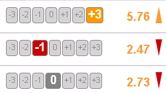
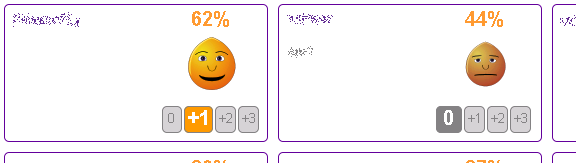

Quick overview
The Liquidizer system is designed to make group decisions as easy and as effective as possible. A public instance can be accessed here.
Simple voting system
Preferences for each question can be cast between -3 and 3. A limited voting weight will be distributed on the selected issues according to the preferences. Updated results will show up immediately after clicking and can be revised at any time later.

Social interaction
The preference match between all users is visualized with emoticons. Conflicting positions can be detected quickly and possibly resolved with discussion.

Full control over your data
The Liquidizer provides quick access to all of your settings and your voting behaviour. At any time you can revoke your positions. No history is saved in the system.

More documentation
You can find more documentation on the help page of the Liquidizer.
Links
- http://liquidizer.org A public instance of the software
- http://liquidizer.org/help.html More help on using the Liquidizer